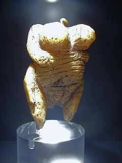
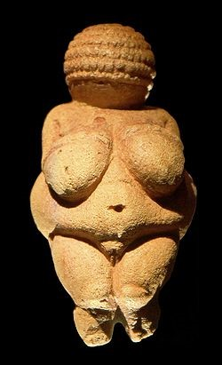
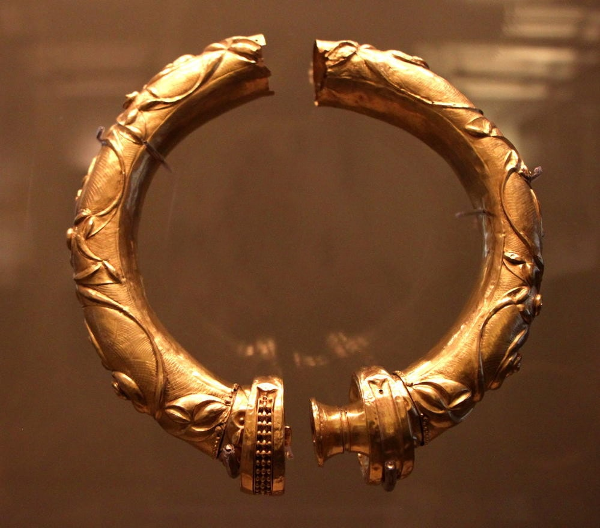
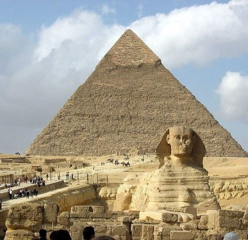
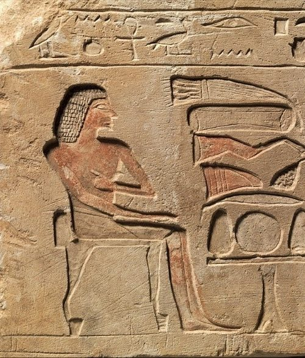
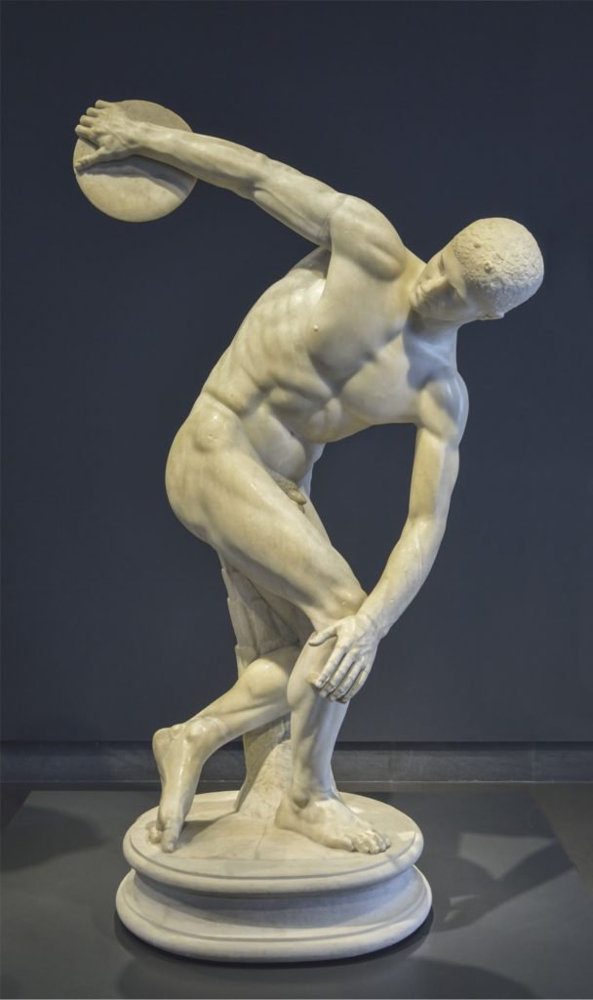
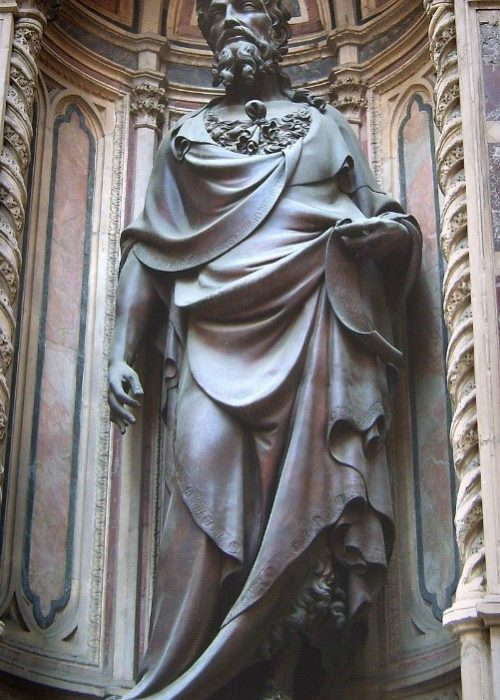
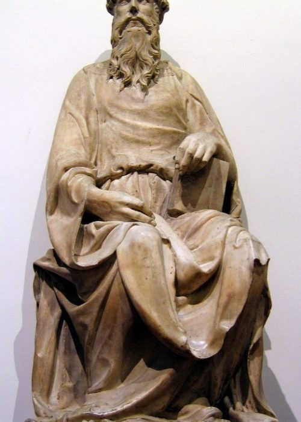

Слово «скульптура» вошло во многие языки мира от латинского sculpo — вырезаю, высекаю. Сегодня скульптура — это вид изобразительного искусства, мастерство создания объемных фигур и композиций из множества материалов: камня, дерева, глины, металла, стекла... В основе искусства скульптуры лежит принцип осязательности и телесности, ценятся материальные качества произведенной формы. Искусство скульптуры имеет очень богатую и насыщенную историю — от древнейших времен, когда человек только появился как вид, и до наших дней. В этой статье мы рассмотрим основные этапы развития скульптуры от Древнего мира и до XXI века.
Всю скульптуру можно условно разделить на два вида: круглая скульптура и рельеф. К круглой скульптуре относятся статуи, скульптурные группы, статуэтки и бюсты. Отличительной особенностью круглой скульптуры является возможность зрителя осмотреть фигуру с разных сторон, оценить ее в пространстве, — все это обеспечивает разностороннее восприятие произведения. Рельеф же представляет фигуру отчасти погруженной в плоский фон. Рельеф подразделяется еще на три вида: барельеф, горельеф и контррельеф. Барельеф — это фигура, выступающая из плоскости менее, чем на половину; горельеф — фигура, выпуклая наполовину; а контррельеф — это заглубленная, «утопленная» в поверхности фигура.
Первая скульптура появилась задолго до нашей эры. Исследователи сходятся во мнении о первобытной скульптуре, что первые люди начали вырезать статуэтки из костей, бивней и мягкого камня, чтобы передать потомкам свои знания и сохранить память о современниках, членах племени и семьи. Древние люди, еще не вышедшие из дикого состояния, хотели в образе скульптуры выразить идею божеств и идолов. Наиболее известными широкой общественности представляются палеолитические Венеры — обобщающее понятие для множества найденных археологами статуэток женщин, обладающих некоторыми общими признаками. Большинство статуэток имеют ромбовидную форму: суженные вверху и внизу, и широкие в средней части. У многих «Венер» подчеркнуты определенные анатомические особенности, так, древних женщин изображали с большим животом, широкими бедрами, объемными ягодицами и грудью. Некоторые статуэтки изображали беременных женщин. Ученые объясняют такие характеристики культом фертильности, широко распространенным в древние времена. До развития сельского хозяйства и скотоводства излишний вес и тучные формы могли символизировать стремление человека к изобилию, безопасности и плодородию.
Согласно исследованиям ученых, первые Венеры палеолита были созданы 30-35 тысяч лет назад, в эпоху позднего палеолита и относятся к расцвету ориньякской культуры. Большинство найденных статуэток имеют небольшой размер — от 4 до 25 см в высоту.

Венера из Холе-Фельс, 35 тыс. лет до н. э.
Венера Виллендорфская, 25-28 тыс. лет до н. э.
Так называемый «Темный век» (1100–900 г. до н. э.) в истории греческой культуры характеризуется преобладанием произведений из керамики. Греческая скульптура в привычном для нас виде появляется начиная с 650 годов до н. э. После этого греческое искусство развивается в соответствии с традиционной хронологией.
Стоит упомянуть также кельтскую металлическую скульптуру (400–100 г. до н. э.). Ее развитию и распространению влияния помешала дезорганизованность разрозненных кельтских племен, которые не выдержали конкуренции с более организованными и централизованными государствами.

Кельтский обруч
Этот период характеризуется непрерывной чередой экспериментов в области скульптуры как вида искусства. В это время создаются многие работы в стиле курос, изображающие обнаженных атлетов.
Древние египтяне, старейший из культурных народов древнего мира, первыми начали ваять скульптуры. Развитие скульптуры Древнего Египта сопутствовало развитию архитектуры, произведения служили украшениями храмам, изображали богов, царей и мифических созданий.
К монументальной скульптуре древнеегипетской цивилизации можно отнести небезызвестного «Большого сфинкса» — фигуру, высеченную из монолитной известняковой скалы около 2500 года до н.э. Поблизости находится архитектурное сооружение — погребальная пирамида фараона Хефрена. «Большой сфинкс» является самой древней монументальной скульптурой, известной на сегодняшний день. Египтяне постигли и искусство рельефа: на стенах храмов и гробниц изображались сюжеты из жизни фараонов и великих людей того времени, а также иллюстрации к преданиям и мифам о подвигах богов и героев.

«Большой сфинкс» на фоне пирамиды Хефрена, ок. 2500 лет до н.э.
Рельеф из гробницы генерала Сехетепибра, ок. 1800 лет до н. э.Долгое время римская скульптура была далека от идеализации объектов и реалистична. В дальнейшем римские скульпторы при создании бюстов императоров, сановников, исторических рельефов и памятников стали злоупотреблять героизацией, создавая все более и более посредственные образцы скульптуры.

Дискобол. Мирон. Римская копия.
Вплоть до IV века н.э. ранняя христианская скульптура представляла собой, в основном, рельефы для могил и саркофагов. Искусство Восточной Римской империи было почти полностью религиозным и кроме небольших произведений из слоновой кости, а также работ в ювелирном деле, не содержало объемных скульптур.
Как следует из названия периода, это было не лучшее время для европейских скульпторов. Церковь не имела весомой силы, города были обедневшими, а уровень культуры — низким.
В дальнейшем формируется связь между общественной архитектурой и скульптурой. Новые здания, как правило, нуждались в скульптурном оформлении как внутри, так и снаружи. Опорные колонны включали в себя декоративные элементы различных форм, фасады и дверные проемы украшались рельефами.
Возрождение скульптуры средневековья началось благодаря Карлу Великому I, королю франков, ставшему императором Священной Римской империи в 800 году. Позитивные культурные изменения были продолжены императорами Отто I, Отто II и Отто III, в стиле, известном как Оттоновское искусство.
Различные политические события, в том числе крестовые походы, привели к бурному строительству новых соборов и церквей по всей Европе. Романский стиль, известный в Великобритании и Ирландии как «нормандская» архитектура, был крайне популярен, что привело к развитию пластического искусства, созданию мастерских по резьбе и т.д.
Новые архитектурные приемы и развитие спроса на изобразительное искусство в разных формах в конце XII века сформировали так называемый «готический стиль«. Характерные особенности романского стиля (закругленные арки, массивные толстые стены и маленькие окна) были заменены остроконечными арками, высокими потолками, тонкими стенами и огромными витражами. Это полностью трансформировало интерьер многих соборов.
В эпоху средневековья искусство скульптуры потеряло былое величие. Это связано с приходом христианства; согласно идеологии этой религии, пластические образы и формы фигур, их чувственность и материальность могли вернуть верующих к пережиткам идолопоклонства и языческих культов. На смену сюжетам мифологии пришли библейские сюжеты, которые изображались преимущественно в мозаике и живописи. В эпоху раннего средневековья скульптура находилась в упадке, создавались в основном атрибуты религии: кресты, рамы священных икон, внешний и внутренний декор храмов.
Эпохе Возрождения предшествовала Готическая эпоха. В это время средневековые скульпторы работали над украшением величественных готических соборов, ваяли статуи христианских святых и мучеников. Поэтому готическая скульптура неотделима от архитектуры того времени и представляет собой часть средневековых религиозных сооружений.
XV век стал периодом глобальных изменений не только в живописи и скульптуре, но и в искусстве в целом. Художники эпохи Возрождения снова обратили взгляд к античности, стали предпринимать попытки возродить традиции прошлого после многовекового забвения и темных времен Средневековья. Скульпторам и живописцам пришлось заново открывать перспективу и пропорции. В эпоху Возрождения скульптура античности стала восприниматься не как шаблон для подражания, а как историческое осознание связи прошлых веков с настоящими. Мастера Ренессанса стремились отбросить готические и византийские традиции и вернуться к классике эллинизма и древнеримской доблести.
Прародиной Ренессанса принято считать Флоренцию. Этот регион Италии подарил истории таких великих скульпторов как Донателло, Лоренцо Гиберти и всемирно известного Микеланджело Буонарроти.
Лоренцо Гиберти совершенно по-новому подходит к теме статуи. В 1414 году скульптор завершает статую Иоанна Крестителя для церкви Орсанмикеле. Работа характеризуется идеей возрождения античности с помощью христианской духовности. Гиберти возрождает пришедшую в упадок технику отливки круглых бронзовых скульптур. «Иоанн Креститель» воплотил в себе благородство позы и движения, схожее с оратором времен античности, и одновременно смирение и напряжение христианского духа.
Великий мастер Донателло в своей работе также обращался к искусству античности. В понимании Донателло классическая скульптура была не вновь обретенным благом, а достоянием флорентийского народа. Скульптор также работал с круглой скульптурой, выдвигая на первый план задачи пластики и формы. Линии скульптур Донателло искусствоведы называют дугообразными и полными внутренней нравственной силы. Эта сила передается зрителю через прочность посадки головы скульптур, сдержанность жестов и господство фигуры над окружающим пространством.

Л.Гиберти: Иоанн Креститель, 1414 г.
Донателло: Иоанн Евангелист, 1415 г.
Скульптура.Часть1
Скульптура.Часть2